Preface—About this Book
This reader is designed for CS 150, C++ Programming I, at Orange Coast College. CS 150 is a second course in computer science, so you are expected to know the basic programming constructs: variables, input and output, calculations, loops, decisions, functions and arrays.
This Spring 2015 version of the CS 150 Course Reader is goal oriented. Each chapter will begin with a homework problem, and the rest of the chapter will show you how to solve it, presenting the necessary parts of C++ as they are encountered. Unlike the text used in previous semesters, this reader is shorter and more consise, focusing mostly on the parts you need to get your work done.
However, because our OCC prerequisite courses vary considerably in what topics they cover, and how those topics are presented, it is difficult to rely on any specific material. Some of you, for example, will already understand C++ control structures from prior experience with closely related languages such as C# or Java; others of you may have taken Python or Visual Basic, and for you, the structure of C++ might seem unfamiliar.
Because of this disparity in background, as new language features are presented, you'll find links to the companion CS 150 C++ Reference that is organized in a more traditional manner. You will be able to use a version of this reference during your programming exams, so you'll want to become familiar with its organization.
Here are some icons that are used in the text.
| Web page with more information (optional) | |
| PDF document with more information (optional) | |
| In-depth reference material (should read) | |
| Review exercises (should complete) |
About C++ Versions
Unlike proprietary languages like Java or Visual basic, that are controlled and owned by a particular company, C++ is a standardized langauge, whose specification is controlled by an international standards organization. Different companies are thus free to implement the C++ language without fear of lawsuits, such as the suit currently in litigation surrounding Java.
There several different versions of C++ that have been developed over the years. You should know about three of them.
- The different versions of C++ available in the 1980s and 90s are known as pre-standard C++. You are unlikely to encounter any of these versions today, but you may see them mentioned in different textbooks. Different versions of pre-standard C++ were often incompatible with each other.
- In the early 1990s, the first C++ standardization effort began,
culminating in the 1998 release of Standard C++,
standardized by the international standards organization (ISO).
This is also known as ANSI or ISO C++, or C++98.
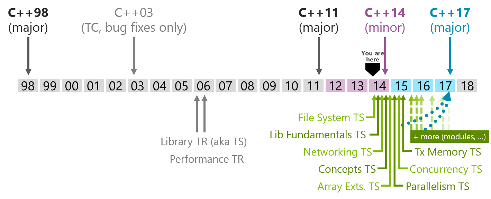
- In 2011, C++ was standardized again, with several new features. The current version of ISO Standard C++ is now known as C++11.
Of course this new standard is not set in stone. Just this year, the next version of Standard C++, C++14 was finalized, and work is now proceeding on C++17.
In this course we will use several C++11 features, so you'll need to use a compiler that supports it. This includes GCC 4.8 on Linux or Windows, XCode 5 on the Mac, and Visual Studio 2013 on Windows. You won't be able to use earlier versions of these compilers.
What is C++?
In the early days of computing, programs were written in machine language, the primitive instructions that can be executed directly by your computer's CPU. Machine language is also known as native code. Programs written in machine language are difficult to understand, mostly because the structure of machine language reflects the design of the hardware rather than the needs of programmers.
Worse still, each type of computing hardware has its own machine language, which means that a program written for one machine will not run on other types of hardware. Machine language programs are inherently non-portable.
In the mid-1950s, programmers working under
John Backus at IBM wondered if it would be possible to
have the computer itself translate the formulas they were using
into machine language. In 1955, they produced the initial version
of FORTRAN (is a contraction of FORmula
TRANslator). This was the first example of a
high-level programming language (HLL).
The C programming language
In 1970, a pair of young researchers at Bell Labs in New Jersey—Ken Thompson and Dennis Ritchie—developed a portable operating system for a new generation of mini-computers just coming on the market. To help simplify the development of Unix, Ritchie created a new programming language named C (because its predecessor was B).
Both Unix and C have had enormous impact on the field of computing. Many of today's most important language are based on C, including C++, which still uses much of the original syntax designed by Ritchie.
The C++ language
Around 1980, another researcher at AT&T's Bell Labs, Bjarne Stroustrup, began adding object-oriented features to C. This first version of C++ was known as C With Classes.
In addition to C, C++ also descends from a family of languages designed to support a different style of programming; a style that has dramatically changed the nature of software development in recent years.
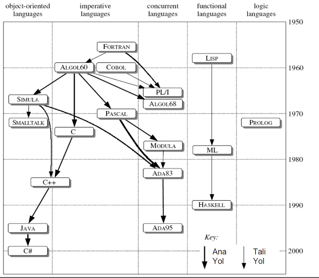
In the procedural or imperative programming style, programs consist of a collection of procedures and functions that operate on data. In object-oriented programming, programs are viewed instead as a collection of data objects that embody particular characteristics and behavior.
The first object-oriented language was SIMULA, a language designed in Norway for writing simulations. Much of the vocubulary we'll use to describe the object-oriented featers of C++ comes from the original 1967 specification for SIMULA.
There were several parallel efforts to design an object-oriented language based on C, (such as Objective-C, used on the Macintosh). The most successful was the language C++, which was developed by Bjarne Stroustrup at AT&T Bell Laboratories, beginning in the early 1980s.
C++ as a Multi-Paradigm Language
In C++ the object-oriented and the imperative programming styles are complementary. Even within a single application, you are likely to find a use for more than one approach. As a programmer, you want to look at these different styles or paradigms as tools that you can pull out of your toolbox when needed, so that you can use the conceptual model that is most appropriate to the task at hand.
Unlike idealistic languages that enforce a "one true path" to to programming Nirvana, C++ is pragmatic. C++ is not an object-oriented language; instead, it was designed to be a multi-paradigm language; it supports both procedural and object-oriented programming, as well as the style known as generic programming which you'll meet later in the semester.
How C++ is different than other languages
C++ is a compiled, high-level language. Unlike, Java, C# or Python compilers which produce an intermediate-level bytecode that is then interpreted by a virtual machine, C++ compilers produce native machine code which runs directly on the hardware without any interveining software.
Because of this, C++ programs tend to be much more efficient than Java, Python or C# programs. In fact, the most popular version of Python, as well as the Java Virtual Machine itself, are both written in C++.
There are some drawbacks to writing programs in C++ as well. Because your code runs directly on the hardware, instead of inside a supervising virtual machine, certain kinds of runtime errors, such as accessing elements outside the bounds of an array, cannot be detected. In addition, C++ compilers are usually not as restrictive as Java or C# compilers, and so it is somewhat easier for logic errors to slip through your code.
H00—Your First C++ Program
As I mentioned in the preface, this reader is goal-oriented We'll always start by defining a problem and then learning how to solve it. For the first few weeks of the course, we'll be working on simple IPO or Input-Processing-Output style programs.
Here's your first problem (from Savitch-Absolute C++ 5).
A metric ton is 35,273.92 ounces. Write a program that will read the weight of a package of breakfast cereal in ounces and output the weight in metric tons as well as the number of boxes needed to yield one metric ton of cereal.
The IPO Concept

I always like to have a mental picture for my definitions, so I think of a computer as an information processor, sort of like a Cuisinart for words and numbers and ideas.
Instead of vegetables, we feed our computer data; the raw facts figures and symbols we have to work with. The computer uses a program stored in memory, to turn that data into information that's organized, meaningful and useful. (Of course, if the data contains errors, then the information won't really be all that useful; that's the origin of the term GIGO: Garbage IN; Garbage OUT).
In fact, every program is based on this fundamental concept: input some data, process it and produce some information.
What It Looks Like and What It Does
The programs that we'll write for these first few weeks will be interactive IPO programs. You'll type the input at the keyboard in response to a prompt, and the output will be displayed on your monitor. Many of you will find this kind of "old fashioned", but the concepts you'll learn will remain the same for even the most sophisticated program.
So, let's start by thinking about what we what you want the interaction to look like. Planning this out ahead of time will make developing your code much easier. Don't spend too much time on this step, though, because you'll often change it as your program develops.
Here's one possible interaction design, given this problem.
------------------------------------------------------
Enter ounces per box of cereal: 10
Weight in metric tons: .0002835
Boxes per metric ton: 3528
In the illustration shown here I've displayed the input values in blue, and the calculated output values in dark red. When we actually run the program, of course, everything will be displayed in the console in a single color. I've also displayed my user name in the program heading when it runs.
C++ Mechanics—Tools & Techniques
To create your own C++ programs, you follow a mechanical
process, a well-defined set of steps called the
edit-build-run cycle that looks like this:

If you are coming from Python (or even Java or C#) this seems much more complex than what you are used to. In actual practice it is not any more difficult; you just have more options.
- Create your source code using an editor
- Build your executable using a compiler toolchain
- Run your program using your operating system facilities
Learning this process is necessary before you can learn to program, but it is not the same as learning how to program; you must master the process, but mastering the process doesn't mean you'll write correct and elegant programs.
You'll learn more about the details of compiling and linking in lecture and later in the class. Right now you just need to know what is needed to get everything to work.
The GCC Toolchain & the Computing Center
As you can see from the previous section, the C++ build process which turns your source code into an executable involves several tools:
- Preprocessor—performs text substitution on your source code.
- Compiler— converts the preprocessed to code to object code.
- Assember—used by the compiler to produce the object code.
- Linker—combines object modules to produce an executable that can be run.
- Make—provides instructions for building each program.
- Loader—reads the executable from disk into memory and starts it running.
- Debugger—allows you to run your program inside a controlled environment.
A particular combination a C++ compiler, linker, assembler and libraries is known as a toolchain. The toolchain we'll be using in class and on your programming exams is a version of the GNU Compiler Collection (GCC) that has been adapted for Windows. It is called MinGW.
To get started, double-click the batch file C:\Apps\GCC\C++.bat. This batch file sets up the executable paths to the MingGW toolchain in the Computing Center.
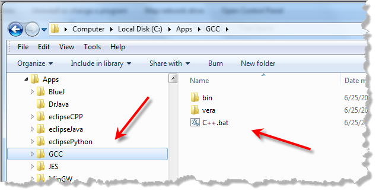
CS 150 Starter Code
Instead of writing every program from scratch, I’ll provide you with a set of “starter files” that provide a framework for running and testing simple C++ programs.
- Download the H00.zip file from Blackboard and unzip it.
- Locate the h00 folder that it contains and place it somewhere that you can work on it (such as a cs150-home folder).
- Then, drag the source file named main.cpp and drop it onto the SciTE editor window where it will automatically open.
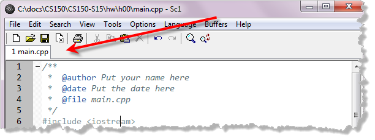
SciTE
Along with GCC or MinGW we need a text editor to write our source code. The text editor we'll use, named SciTE, is a programmer's text editor that knows how to use different external tools, such as compilers, linkers and interpreters, based on the type of file you have open. Find out more about using SciTE and GCC, including how to install the files on your home computer, in the link on the left.
Identify Yourself
There are three places you'll need to add identification to every project you build.
- First, in the file documentation comment at the top of the program, add your name after the @author tag and the date after the @date tag.
- Next, find the STUDENT variable and fill in in with your Blackboard login ID. I use this as a sorting key when processing the assignments; if you do this wrong, you will not receive any credit for an assignment.
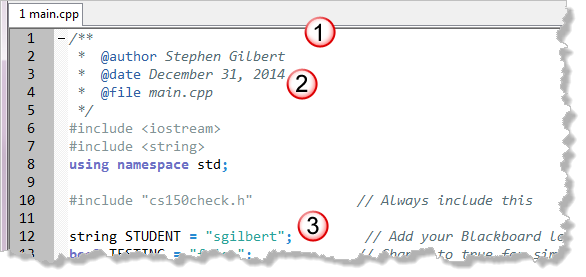
Designing A Solution
When it comes to programming, C++ is like any other language in
at least one way: all programming starts with planning and
design.
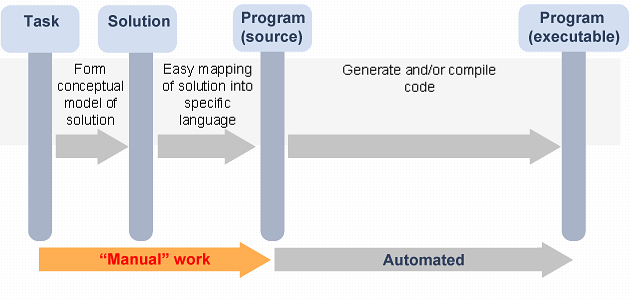
Before we can write our C++ program, we have to spend time thinking bout the inputs, processing and outputs. We have to create a conceptual model of the solution, before we can write our code.
- Always design your programs before you start writing code.
- What are the inputs, outputs, algorithms and assumptions?
- Write it in English before you ever start writing in C++.
Remember: the sooner you start writing code, the longer it will take you to finish.
A Preliminary Solution
Here is some information that we can discover from the problem statement:
- Input: weight of a box of cereal in ounces
- Output: weight of box in metric tons and number of boxes in one a metric ton.
- Given: metric ton is 35,273.92 ounces
- Calculation: the weight in metric tons is equal to the weight in ounces divided by the number of metric tons per ounce.
- Calculation: the number of boxes per metric ton is equal to one divided by the weight of a single box in metric tons.
Instead of designing your program on the back of an envelope, though, there is no reason you can't use your computer. One of the best techniques is to put your design information into a program comment before you begin writing your code. You'll see how to do that shortly, but first, let's look at the basic structure of a C++ Program.
Basic C++ Program Structure
When you scroll down a little further in main.cpp you'll find a function named run() preceded by a documentation comment. Every C++ has at least one function named main() that is automatically called when your program is run.
Instead of main(), we will be using run() for our simple IPO (Input/Processing/Output) programs to simplify the process of testing your code. The actual main() function is contained inside the executable source file cs150check.cpp and it changes depending on whether you are running your program interactively or testing it.
You can ignore these details and treat the run() function exactly as main() is used in your reference document.
Commenting Your Program
C++ has three kinds of comments: multi-line, single-line and documentation comments. We will not normallly use the original (C-style) multi-line comments. Instead, we'll use documentation comments at the top of every file, and before function. For commenting inside a function, use single-line comments. The C++ reference link has more information on each type of comment.
Every program should have a comment that describes what it does. For your CS 150 programs, you'll find the information you need in the problem specification that I supply you. You'll place that information in the comment preceeding the run() function. Here's an example:
/**
Calculate cereal box weight in terms of metric tons.
Given: metric ton is 35,273.92 ounces
Input: weight of a box of cereal in ounces
Output: weight of box in metric tons
number of boxes in one ton
Calculation: weight in metric tons ->
weight in ounces divided by metric tons per ounce
Calculation: number of boxes ->
1 divided by weight of box in metric tons
@return 0 for success.
*/
int run() ...Start With the Output
With all of that out of the way, we're ready to write some code. Usually, with an IPO (Input, Processing and Output) program, you being by mocking up the interaction, using plain output, substituting both input and output values with literals.
Input and output are not built-into the C++ language, but are part of the standard library. To use these facilities, you need to add the line #include <iostream> at the top of your program, and introduce the standard namespace. The starter code has already done this for you, but you should read the reference material, so you'll know how to do it yourself.
In the C++ standard library, the standard output object is named cout and you use it along with the insertion (or "put to") operator << like this:
int run()
{
cout << STUDENT << "-CS 150 Cereal-box Calculator" << endl;
cout << "------------------------------------------" << endl;
cout << "Enter ounces per box of cereal: " << 10 << endl;
cout << "Weight in metric tons: " << .002835 << endl;
cout << "Boxes per metric ton: " << 3528 << endl;
return 0;
}Note that the arguments that are sent to cout are printed from left to right, with each one being separated from the others by the insertion operator. The last value sent on each line, endl, is pronounced "end-ell" and it represents the newline character on your platform. Each output line ends with a semicolon which marks the end of each C++ statement.
In this case, I have separated the numbers I expect the program to print (or that I expect to receive as input from the user) from the literal text which is enclosed in semicolons. This style of mockup will make the subsequent development of the program a little easier because you won't have to change the ouput text and possibly mess up the spacing.
Compile, Link and Run
Believe it or not, once you've entered and saved your source code, you're ready to compile and link it. As I mentioned earlier, this is called building the program.
With G++, building is accomplished by running a program called make,
but with SciTE you do that by simply choosing Build from
the Tools menu, like this:
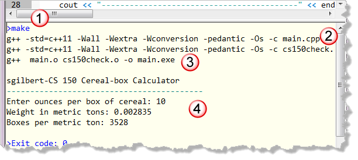
To build your program:
- SciTE runs the make program.
- The make program reads the makefile and compiles each of the .cpp files in the folder. In this case those are the two files main.cpp and cs150check.cpp.
- If everything compiles correctly, the linker combines the two object-code files and produces the executable.
- If all goes well with that, then the program runs
The output appears in SciTE's Output Window, and it looks exactly like the interactions dialog we mocked up. So let's turn our attention to input and processing.
Wait! Something Went Wrong!!!!
Of course it's possible that your code didn't compile and run successfully. There are two errors that can occur at this point:
- Syntax or compiler errors occur when you have
broken one of the grammar rules of C++. If that occurs, instead
of the output you expect, you'll see an (often inscrutable)
error message in the output pane instead, perhaps like this:
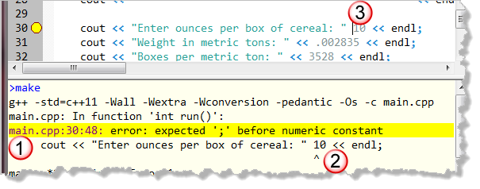
When this occurs:- Scroll up to the first error that appears in the output window and double-click the magenta-colored line (the one with the file name and line numbers). That will scroll the error into the editor window and place the yellow dot in the left margin.
- The second line of the error will attempt to show you exactly where the compiler got confused. In this case, it is right before the literal number 10.
- Finally, go to the text editor and fix the problem. This is where things get tricky. The compiler actuall doesn't know what you intended to write, so the solution it recomments is often incorrect. If you do add a semicolon where it suggests, then that will just trigger another message. The actual solution in this case is to add the insertion operator (<<) that we've forgotten between the operands.
Once you've corrected and saved your source code, compile again to see if you've fixed the problem. You can't go onto the next step until there are no errors. - Logic errors or bugs occur when your program
doesn't do what it is supposed to do. For instance,
if the output of the program looks like this when you run it
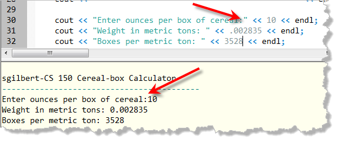
then you have a logic error, becuase you removed a space that was supposed to appear in the output.
Input, Processing and Output
Since our program now looks exactly like the interactions dialog we mocked up, we can turn our attention to input and processing. To do that, we'll need to:
- Create some variables to hold both the input and the results of our calculations.
- Use the C++ standard library input object named cin (along with the extraction or input operator >>).
- Write some expressions that calculate the values our program should produce and store those in yet another set of variables.
- Display the results and test to see that they are correct.
Reading Input
We only need to read one input value: the number of ounces
per box. To do that, we'll first create a variable to
hold the input. Because cereal boxes often contain a fractional
portion of an ounce, we need to use the data-type
called double.
Finally, when we name our variable, I prefer to use the camelCase
style, but some prefer to use all lowercase with underscores separating
the parts of the word.
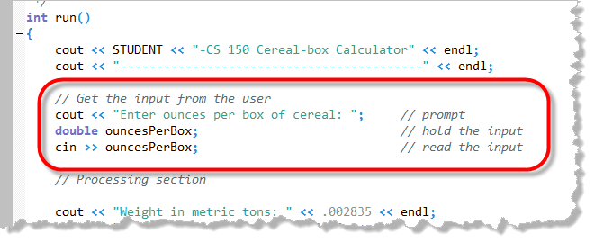
To read input from the user, we first prompt for the information that we expect to be typed and then read the input from the standard input stream cin (prounounced "cee-in"). The cin object is the counterpart to cout. Here's what the code looks like after I've added a variable and read a value from the user.
Prompting for Input
Notice that the "mockup" data previously appearing on the prompt line has been removed, as well as the newline (endl) appearing after the prompt. When you display a prompt for input, you generally omit the endl at the end of the line so that the prompt appears on the same line as the user input.
In addition, you should make sure that the prompt ends in a single space, so that it displays the prompt but leaves the console cursor–the blinking vertical bar or square that marks the current input –position at the end of the line, waiting for the user's response.
Converting Input Data
This final statement in the marked section reads a sequence of characters typed by the user at the keyboard, and stores the results in the variable named ouncesPerBox. Because this variable was declared as a floating point (double) variable, the >> operator automatically converts the characters typed by the user into the appropriate real number value.
Processing and Output
Although we could just do our calculations as part of the output, I encourage you to create variables to hold the output values as well. Since we want to print two different values, I'll create two different variables: weightInMetricTons and boxesPerMetricTon.
In C++, variables that are not initially given a value use whatever random value happens to be in memory at that time. So, instead of first creating the variables and then calculating and assigning a value, I recommend that you create variables only when you can calculate an initial value.
Using the algorithm we developed when designing the program, we can initialize those variables like this, and then replace the "mockup" values from our output with the new calculated values like this.
int run()
{
cout << STUDENT << "-CS 150 Cereal-box Calculator" << endl;
cout << "------------------------------------------" << endl;
// Get the input from the user
cout << "Enter ounces per box of cereal: "; // prompt
double ouncesPerBox; // hold the input
cin >> ouncesPerBox; // read the input
// Processing section
double weightInMetricTons = ouncesPerBox / 35273.92;
double boxesPerMetricTon = 1.0 / weightInMetricTons;
// Output section
cout << "Weight in metric tons: " << weightInMetricTons << endl;
cout << "Boxes per metric ton: " << boxesPerMetricTon << endl;
return 0;
}Constants
While our program looks OK, it does have one small flaw. The original problem statement we were given specified the number of ounces in a metric ton using the literal value 35,273.92. However, in our calculations, we don't want to use literal "magic" numbers such as this: they are too easy to mistype and they make the code more confusing. Instead, you should store all "given" values in named constants.
// Processing section
const double OUNCES_PER_METRIC_TON = 35273.92;
double weightInMetricTons = ouncesPerBox / OUNCES_PER_METRIC_TON;
double boxesPerMetricTon = 1.0 / weightInMetricTons;Constants can appear inside your function (as I've done here), or, if you intend to use them throughout your program, you can enter them before the run() method.
Testing Your Program
When we run our program, it doesn't quite match up with what our initial design anticipated. For one thing, the number of decimals displayed is slightly different that we expected. So, how do we know if our program is correct?
Simple; wou need to test it. To test it, we need to supply several input values, and then figure out, exactly what the output should be. The easiest way to do that is to use Excel or Google Docs like this:
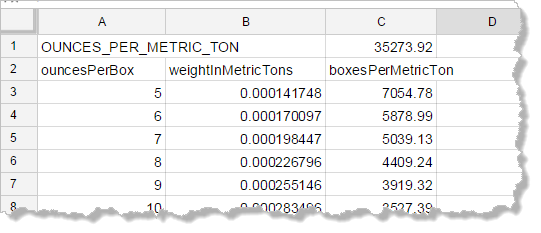
Since we haven't formatted any of our output, you might have to adjust the number of decimal places for each portion.The CS 150 Testing Framework
The CS 150 framework includes a simple testing scheme for IPO type programs. Here's how it works.
- For each input you want to test, add a new line to the file named testcases.txt (which you'll find in the folder with your starter code). If there are multiple inputs, then separate them with a space or a newline (\n).
- Add a vertical bar (|) to separate the input from the expected output, and then type the output that you want to check.
- Change the program output so the values being checked appear between square brackets ([ ]). If you have multiple outputs, they must all appear between a single set of brackets.
- At the top of main.cpp, change the value of TESTING to true.
When you build your program the next time, instead of reading the input from the keyboard, it will be read from the text file, and each line of input will be compared to the expected ouput.
Changing the Output
To test our program, we'll need to change our original interactions design to appear as something like this:
Weight in metric tons, boxes per ton: [0.000283496, 3527.39]
Here are the lines that need to be modified (in the output section) in main.cpp:
// Output section
cout << "Weight in metric tons, boxes per ton: ["
<< weightInMetricTons << ", "
<< boxesPerMetricTon << ", " << endl;In testcases.txt I've already calculated several sizes of boxes from 5 ounces up to 32 ounces using Google Docs, and then adjusted the decimal places so that they matched the default used by C++. I also set the input for the last entry to 35273.92 (the number of ounces in a metric ton), just to check that we got 1 for each of our calculations.
Run the program, and you'll see that it actually checks to see if
you have the correct values.
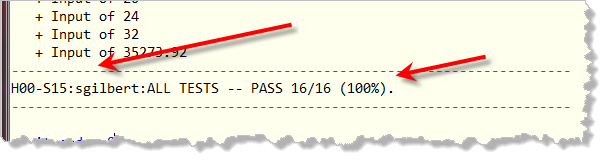
At the bottom of the run is the score. Make sure that your ID correctly appears, and that the assignment displayed is also correct. If these are not correct, then your completion code will be incorrect as well, and you won't get credit for the assignment.But WAIT...! I Want to use ...
While you don't have to use MinGW and SciTE for your homework assignments, you will have to use them on the programming exams; it only makes sense to get some practice before that happens.
If you want to use another ID, below you'll find some handouts that well help you get set up for CS 150.
- Eclipse is an open-source integrated development environment that you can use for C++ development on any platform. However, Eclipse does not include a C++ toolchain, so you'll need to use it in conjuction with MinGW or another compiler-linker combination.
- Visual C++ 2013 is a Windows IDE that supports C++ 11. You can download the free Express Edition from Microsoft or use OCC's DreamSpark subscription to download the Professional Edition. Before you do that, though, try it out in the Computing Center (following these instructions), to make sure you like it.
- XCode is the offical IDE for the Mac. You can download it for free from the Mac App Store. It comes with the best compiler of all of them (known as CLANG). Read the handout to see how to use it for CS 150.